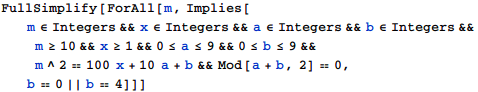
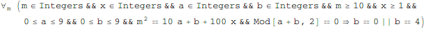
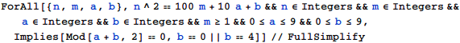
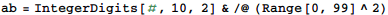
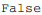
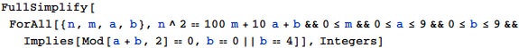
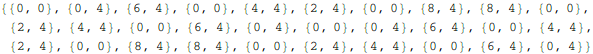
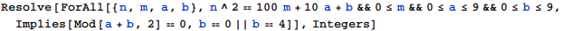

東京大学 2004年 理科 第2問 (未)
問題
自然数の2乗になる数を平方数という。以下の問いに答えよ。
(1) 10進法で表して3桁以上の平方数に対し、10の位の数をa，1の位の数をbとおいたとき、a+bが偶数となるならば、bは0または4であることを示せ。
(2) 10進法で表して5桁以上の平方数に対し、1000の位の数、100の位の数、10の位の数、および1の位の数の4つすべてが同じ数となるならば、その平方数は10000で割り切れることを示せ。
解答
(1)








